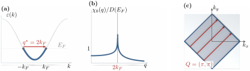
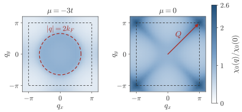

Page 5 of 15 of this session
9.4b Nesting and the divergence of the Lindhard function
At which wavevector does the static Lindhard function diverge, and what does this predict? We will now see that it diverges at the nesting vector, which is \(2k_F\) in a chain, where \(\chi_0(2k_F)\sim\ln(W/T)\), and \(Q=(\pi,\pi)\) in the half-filled square lattice. In both cases the divergence predicts a new order with that wavevector.
\[\chi_0(q) = \frac{1}{N} \sum_k \frac{n_F(\varepsilon(k)) - n_F(\varepsilon(k+q))}{\varepsilon(k+q) - \varepsilon(k)}. \tag{9.4}\]
This is the static Lindhard function of Section 9.4a. It sums over the pairs of states \(k\) and \(k+q\) of a Fermi sea, and only the pairs with one filled and one empty state contribute. At \(q\to0\) and \(T=0\) it is the density of states \(D(E_F)\).
Instabilities and nesting. Equation (9.4) has a strong feature in one dimension. If there is a wavevector \(q^\star\) that connects an occupied state at \(k\) to an empty state at \(k+q^\star\) with the same energy, the denominator in (9.4) vanishes for that term, and \(\chi_0(q^\star)\) diverges. For a generic 1D band the Fermi surface is only the two points \(\pm k_F\), and the single nesting vector that connects them is \(q^\star = 2k_F\) (Figure 9.1a,b). When we sum (9.4) over the whole band we obtain a logarithmic divergence, \(\chi_0(2k_F) \sim \ln(W/T)\), where \(W\) is a cutoff given by the bandwidth. This divergence is the Peierls instability, which drives one-dimensional metals into a charge density wave with the period \(\pi/k_F\). At half filling this period is two sites, as in the order that we found with mean field in Section 1.13.
If a response function diverges, an arbitrarily weak perturbation at that wavevector gives an arbitrarily large change of the ground state. This means that the ground state that we started from is unstable to that fluctuation. This is the central strategy of this session. To predict a new phase of matter, we look for the wavevector where the response function of the old phase diverges.
In a chain the vector \(q^\star=2k_F\) joins the two Fermi points, a filled and an empty state at the same energy, so the denominator of (9.4) vanishes there and
\[\chi_0(2k_F)\sim\ln(W/T)\]
diverges as \(T\to0\). In two dimensions the divergence needs a \(q^\star\) that maps whole segments of the Fermi surface onto each other, which is nesting. This holds as long as no saddle point of the band sits at the Fermi level. At half filling the square lattice has both, the nesting at \(Q=(\pi,\pi)\) and the saddle points \((\pi,0)\) and \((0,\pi)\) at the Fermi level, so \(\chi_0(Q)\) grows as \(\ln^2(1/T)\) and \(\chi_0(0)\) as \(\ln(1/T)\). A response that diverges at \(q^\star\) means that the state is unstable to an order with that wavevector.
The steps The logarithm of the chain at 2kF
Let us take a chain at a generic filling, with the Fermi points \(\pm k_F\) and the Fermi velocity \(v_F\). For \(q=2k_F\) the terms that matter have \(k\) close to \(-k_F\), so we write \(k=-k_F+p\) with a small \(p\), and then \(k+q=k_F+p\). Measured from the Fermi level, the two energies are \(-v_Fp\) and \(+v_Fp\), so the term of (9.4) is
\[\frac{n_F(-v_Fp)-n_F(v_Fp)}{2v_Fp}=\frac{\tanh(v_Fp/2T)}{2v_Fp}.\]
At \(p=0\) the denominator vanishes, and only the temperature keeps the term finite, at \(1/(4T)\). We replace \(\frac1N\sum_k\) by \(\int\frac{dp}{2\pi}\) up to a cutoff \(\Lambda\) where the linear band stops, and with \(x=v_Fp/2T\) we get
\[\chi_0(2k_F)\approx\int_{-\Lambda}^{\Lambda}\frac{dp}{2\pi}\,\frac{\tanh(v_Fp/2T)}{2v_Fp}=\frac{1}{2\pi v_F}\int_0^{v_F\Lambda/2T}\frac{\tanh x}{x}\,dx.\]
The function \(\tanh x/x\) is close to one up to \(x\approx1\) and close to \(1/x\) beyond, so the integral grows as the logarithm of its upper limit. With \(D(E_F)=1/(\pi v_F)\) this gives
\[\chi_0(2k_F)\approx\frac{D(E_F)}{2}\,\ln\frac{W}{T},\]
where \(W\) is of the order of \(v_F\Lambda\), which is the bandwidth. So \(\chi_0(2k_F)\) grows by \(\frac{D(E_F)}{2}\ln2\) each time we halve \(T\). At quarter filling the slope \(D(E_F)/2\) is \(0.113/t\).
At half filling there is one more pair. There \(k_F=\pi/2\), so \(3k_F\) and \(-k_F\) are the same point of the zone. The terms with \(k\) close to \(+k_F\) reach \(k+q=3k_F\), which is the other Fermi point, and they add the same logarithm. The slope doubles to \(D(E_F)=0.159/t\), and the half-filled chain has \(\chi_0(\pi)=0.863/t\) at \(T=0.02t\) and \(0.974/t\) at \(T=0.01t\).
Everything above can be generalized directly to finite frequency. If we repeat the derivation with a perturbation that depends on time as \(\propto e^{-i\omega t}\), we obtain the retarded dynamical Lindhard function.
The response to a perturbation \(\propto e^{-i\omega t}\) is
\[\chi_0(q,\omega) = \frac{1}{N} \sum_k \frac{n_F(\varepsilon(k)) - n_F(\varepsilon(k+q))}{\varepsilon(k+q) - \varepsilon(k) - \hbar\omega - i0^+}. \tag{9.5}\]
At \(\omega\neq0\) the same pairs, one filled and one empty state, absorb the energy \(\hbar\omega=\varepsilon(k+q)-\varepsilon(k)\), and together they build the particle-hole continuum, where \(\mathrm{Im}\,\chi_0(q,\omega)\) is different from zero.
It becomes (9.4) at \(\omega = 0\). For a one-dimensional chain, if we plot \(\mathrm{Im}\,\chi_0(q,\omega)\) over the whole \((q,\omega)\) plane, we obtain a characteristic surface of divergences that follows the particle-hole continuum of the band structure. Figure 9.2 of the next part draws this continuum for the three-dimensional electron gas, and the try-it box below plots it for a chain.
The same logic extends directly to two dimensions. For a square lattice with dispersion \(\varepsilon(k) = -2t(\cos k_x + \cos k_y)\), a low filling gives a small Fermi surface with a shape close to a circle. Then \(\chi_0(q,0)\) is large for \(q\) inside a circle whose size is set by the diameter of the Fermi surface, and small outside it. So the response function is a direct image of the Fermi surface. This is the physical basis of quasiparticle interference (QPI). In real STM experiments, impurities are put into a 2D metal, the modulation of the local density of states that they create is imaged, and the observed wavelength is inverted to obtain the Fermi surface. At half filling, however, the specific dispersion of the square lattice gives \(\varepsilon(k+Q) = -\varepsilon(k)\) for \(Q=(\pi,\pi)\). This is a perfect nesting condition, which connects very large parts of the Fermi surface with the same wavevector at the same time, and at half filling the Fermi surface itself is a square made of straight lines and not a circle. Equation (9.4) then has a very large divergence at \(q=(\pi,\pi)\), which signals a strong instability there. Figure 9.1 shows the whole argument in one place. It shows the single 1D nesting vector, the logarithmic divergence that it gives in \(\chi_0(q)\), and the 2D Fermi surface with straight edges that \(Q=(\pi,\pi)\) nests all at once. Panel (c) shows the straight parallel edges that make the \((\pi,\pi)\) nesting so effective.


g2_lindhard_square.py
h.get_chi. Both maps show \(\chi_0(q)/\chi_0(0)\) on the same color scale, in the extended zone, and the dashed square is the first Brillouin zone. At low filling, \(\mu=-3t\) on the left, \(\chi_0(q,0)\) is almost flat inside the circle \(|q|=2k_F\) and falls outside it, so the map is an image of the Fermi surface. This is what quasiparticle interference reads in an STM experiment. At half filling, \(\mu=0\) on the right, the maximum is at the corner \(Q=(\pi,\pi)\), where the response is \(2.6\) times its value at \(q=0\), because \(Q\) nests the whole diamond. The temperature cuts the divergence of (9.4) to this finite peak. Look at the colors at the corners of the dashed zone, since only the nested Fermi surface has its maximum there.Inelastic scattering measures the imaginary part \(\chi''(q,\omega)\) of the full density response, and for free electrons this is \(\mathrm{Im}\,\chi_0(q,\omega)\) of (9.5). In optimally doped Bi\(_2\)Sr\(_2\)CaCu\(_2\)O\(_{8+x}\), with \(T_c=91\) K, this response was measured with momentum-resolved inelastic electron scattering. The medium energy range from \(0.1\) to \(2\) eV is the one that is relevant to the strange metal. There the spectra are dominated by a featureless continuum that the article calls temperature- and momentum-independent, and that persists to the eV energy scale. The article also finds that this continuum has a simple power law form, with a \(q^2\) behavior at low energy and a \(q^2/\omega^2\) behavior at high energy. The measurement is in this article.
In our reading, the shape of this continuum in energy does not change with \(q\), while its size does. A Fermi sea gives a continuum whose edges move with \(q\). For the half-filled chain it lies between \(2t\sin q\) and \(4t\sin(q/2)\) for \(0<q<\pi\), so a continuum with no edge that moves with \(q\) is not of the Lindhard form.
A spinless chain is at quarter filling, so that the Fermi points are at \(\pm\pi/4\). At which wavevector does the static Lindhard function diverge?
Show the answers
- A. ✗ False
This is false. At \(q=\pi/4\) the state at \(k=-\pi/4\) goes to \(k=0\), where \(\varepsilon=-2t\) and the Fermi level is at \(-\sqrt2\,t\). The vector does not connect the two Fermi points, so nothing diverges.
- B. ✓ True
This is true. The vector between the Fermi points \(-\pi/4\) and \(+\pi/4\) is \(2k_F=\pi/2\). Both the state \(k\) and the state \(k+q\) are then at the Fermi level, which makes the denominator vanish.
- C. ✗ False
This is false. At \(q=\pi\) the state \(k=\pi/4\) goes to \(5\pi/4\). The energy changes from \(-\sqrt2\,t\) to \(+\sqrt2\,t\), so the two states are far from each other in energy. The value \(q=\pi\) is \(2k_F\) only at half filling.
We move the half-filled square lattice away from half filling. The relation \(\varepsilon(k+Q)=-\varepsilon(k)\) with \(Q=(\pi,\pi)\) still holds. Why is the divergence of \(\chi_0(Q)\) cut off?
Show the answers
- A. ✗ False
This is false. The relation holds at every filling, since it follows from \(\varepsilon(k)=-2t(\cos k_x+\cos k_y)\). At \(\mu=0.5t\) we still have \(\varepsilon(k+Q)=-\varepsilon(k)\) exactly.
- B. ✓ True
This is true. At \(\mu\neq0\) the vector \(Q\) maps the contour \(\varepsilon=\mu\) to \(\varepsilon=-\mu\), which is another curve. Only at \(\mu=0\) do the two contours coincide as the same square.
- C. ✗ False
This is false. At \(\mu=0.5t\) the Fermi surface is still a closed curve of finite length, and not a point. A curve is not nested by \(Q\), but this is because of its shape and not because it has no size.
The square lattice has \(\varepsilon(k)=-2t(\cos k_x+\cos k_y)\). Each map shows its Fermi surface \(\varepsilon(k)=\mu\), with the first zone dashed. Which Fermi surface is nested by a single vector \(Q\)?
Show the answers
- A. ✗ False
This is false. This is the small circle at \(\mu=-3t\), with the radius \(k_F=1.03\). A circle shifted by any \(Q\) meets the original one in at most two points, so only isolated points are nested and not whole segments.
- B. ✓ True
This is true. This is the diamond \(|k_x|+|k_y|=\pi\) at \(\mu=0\). Since \(\varepsilon(k+Q)=-\varepsilon(k)\) for \(Q=(\pi,\pi)\), this vector maps every point at \(\varepsilon=0\) to another point at \(\varepsilon=0\), and each straight edge onto the opposite one.
- C. ✗ False
This is false. This is the curve at \(\mu=-t\), which reaches \(2.09\) along the axes and \(1.86\) along the diagonals, so its sides are curved. The vector \(Q=(\pi,\pi)\) maps it to the curve at \(\varepsilon=+t\), which is another curve, and a shifted curved side meets the curve only at isolated points.
A spinless chain \(\varepsilon(k)=-2t\cos k\) has \(1/3\) of an electron per site. Find \(k_F\), the nesting vector \(q^\star\) and the period of the charge density wave that it predicts. Then show that \(\varepsilon(k+Q)=-\varepsilon(k)\) for the square lattice \(\varepsilon(k)=-2t(\cos k_x+\cos k_y)\) with \(Q=(\pi,\pi)\), and say what this means at half filling.
Solution
The filled states are \(|k|<k_F\), which is the fraction \(2k_F/2\pi\) of the zone. With \(1/3\) of an electron per site we get \(k_F/\pi=1/3\), so \(k_F=\pi/3\), and the Fermi level is at \(-2t\cos(\pi/3)=-t\). The nesting vector is \(q^\star=2k_F=2\pi/3\). A modulation \(\cos(q^\star x)\) comes back to itself after \(2\pi/q^\star=3\) sites, so the chain is unstable to a charge density wave with three sites per cell. In units of \(2\pi\) the vector \(q^\star\) is \(1/3\), which is the vector of the try-it box below, since its mu = 1. is \(\mu=-t\).
For the square lattice \(\cos(k_x+\pi)=-\cos k_x\) and \(\cos(k_y+\pi)=-\cos k_y\), so \(\varepsilon(k+Q)=2t(\cos k_x+\cos k_y)\), which is \(-\varepsilon(k)\). At half filling the Fermi level is at \(\varepsilon=0\). So every state at the Fermi level goes to another state at the Fermi level, and the whole Fermi surface is nested by one vector.
In STM the charge density wave of the chain is a modulation of the density with a period of three sites, and a diffraction experiment sees it as a new peak at \(q^\star\).
Try it. Run the cell with mu = 0. and note the q where the low-energy part of the plot touches zero energy. Then set mu = 1. and run it again. The touching points move from \(q=0.5\) to \(q=1/3\) and \(2/3\), in units of \(2\pi\), which is \(2k_F\) and its mirror image.
Notebook check-in: session9.ipynb, “The charge-charge response function” (Challenge)
Plot \(\mathrm{Im}\,\chi_0(q,\omega)\) for a band structure and a chemical potential \(\mu\) that you can change, as in (9.5). Look at how the divergence follows the Fermi surface when you change \(\mu\), and try to predict from the band structure alone at which \(q\)-vector the instability will appear, before you run the calculation.